Every method panel uses the same H&E-derived display support. The reference panel shows all official code 1/2 pixels. The binary scores use those 3,443,110 known pixels; 206,749 (6.0%) lie outside the display support and remain in both score denominators. 0 known pixels are metastasis. Native and shared-support results remain separate.
Bora, U-Net and DeepLabV3+ were adapted using only tumor_093 and normal_093. MedSAM uses boxes from the adapted U-Net. VISTA-PATH uses a fixed broad “tumor” prompt, which is not metastasis-specific. KODAMA–Bora anonymous grouping was not fitted because the frozen joint tile admission exceeds its 10,000-tile cap; it has no validated CAM tumor naming head.
Binary agreement on official known pixels
The normal slide has no reference metastasis: IoU, Dice and lesion sensitivity are undefined. False-positive tissue area is the relevant endpoint.
| Method | Precision | Recall | Dice | IoU, shared support | IoU, native | Boundary F1 at 5 µm | Lesions matched | False-positive tissue, mm² |
|---|---|---|---|---|---|---|---|---|
| Bora | — | — | — | — | — | — | 0/0 | 0.447 |
| Class-aware U-Net | — | — | — | — | — | — | 0/0 | 0.007 |
| DeepLabV3+ | — | — | — | — | — | — | 0/0 | 0.023 |
| MedSAM with U-Net boxes | — | — | — | — | — | — | 0/0 | 0.006 |
| VISTA-PATH generic tumor prompt | — | — | — | — | — | — | 0/0 | 1.484 |
Completion: five of five rendered methods for this slide. Boundary and lesion metrics have separate domains and are undefined where no reference lesion exists. This is a selected six-slide technical study; patient and center separation could not be verified.
Full-slide overview
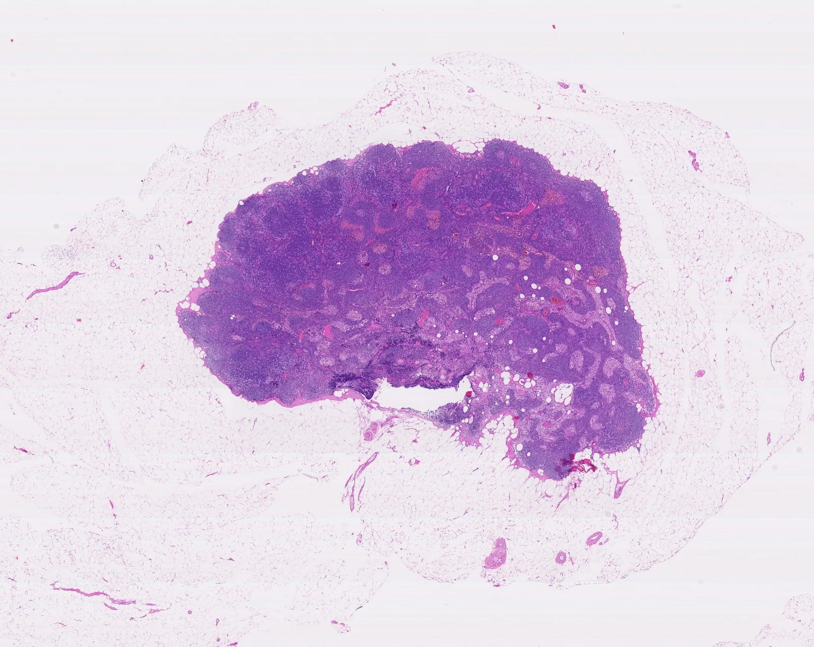

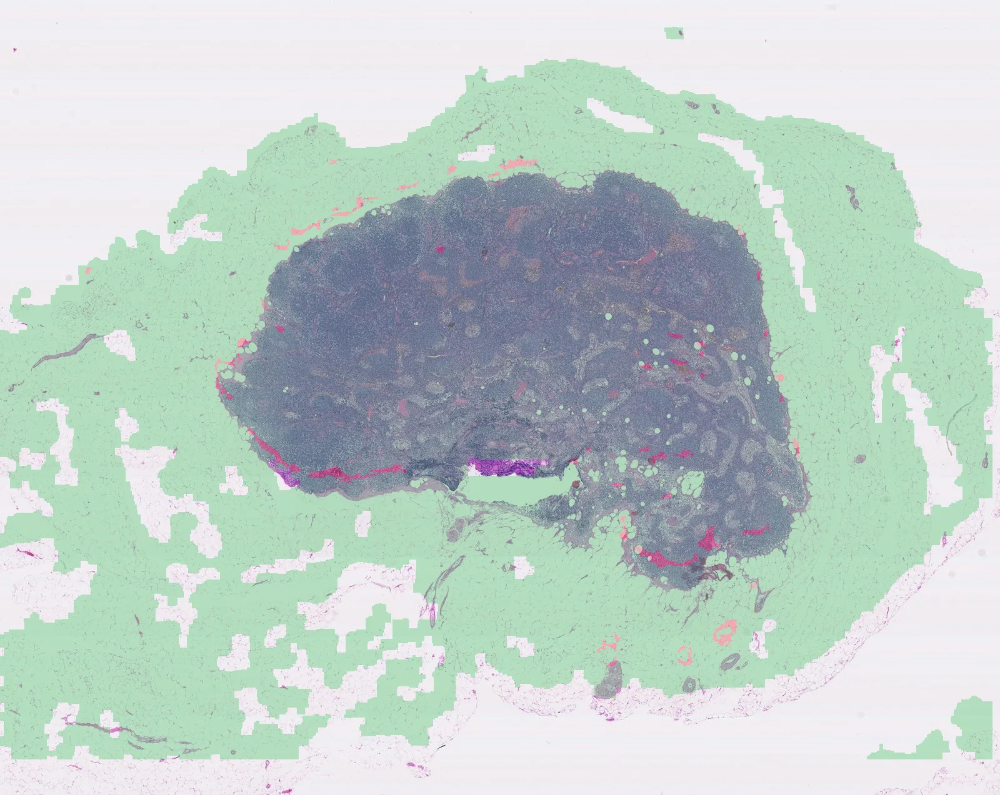

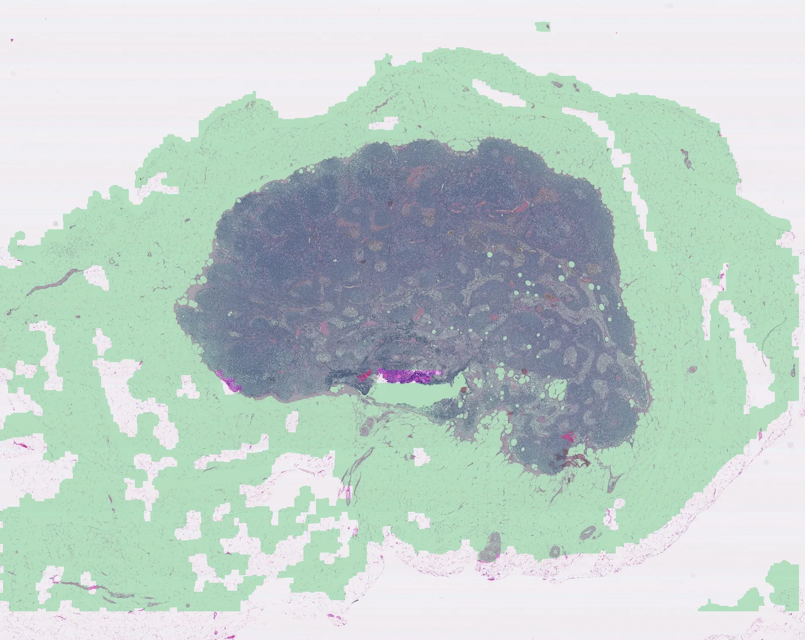


Field 01 · same coordinates in every panel

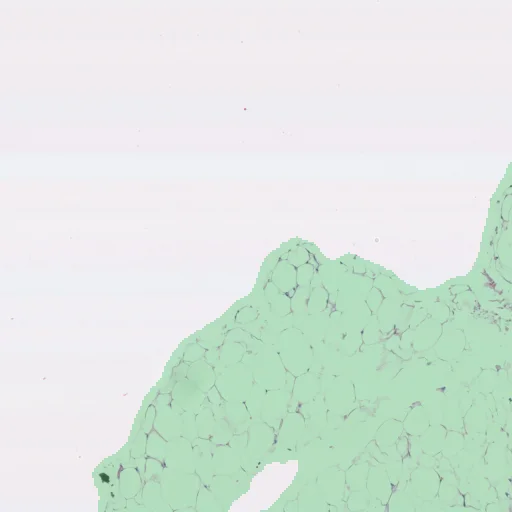


Field 02 · same coordinates in every panel

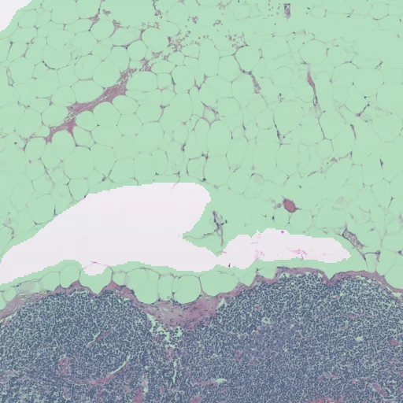
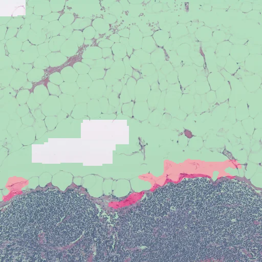
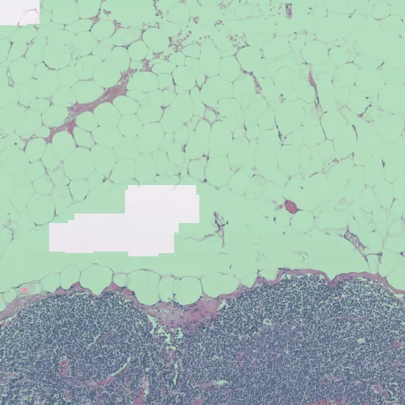

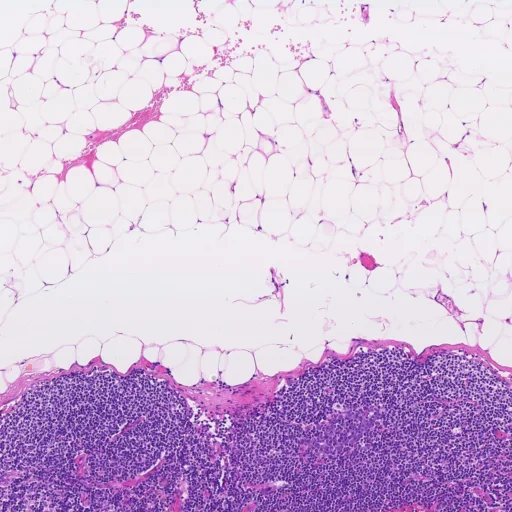
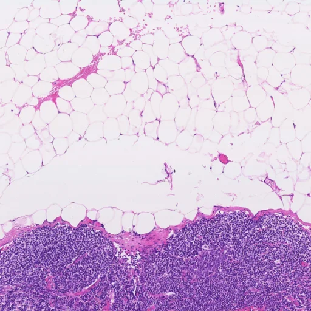
Field 03 · same coordinates in every panel


Field 04 · same coordinates in every panel


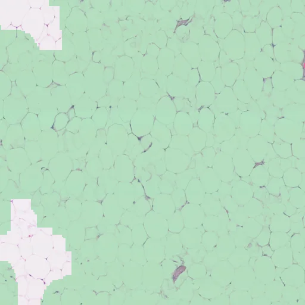


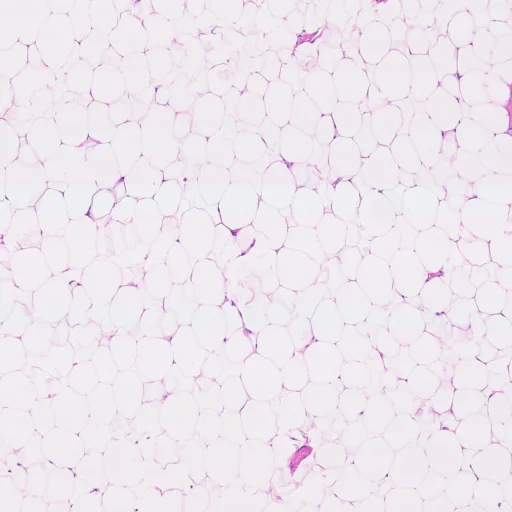
Field 05 · same coordinates in every panel
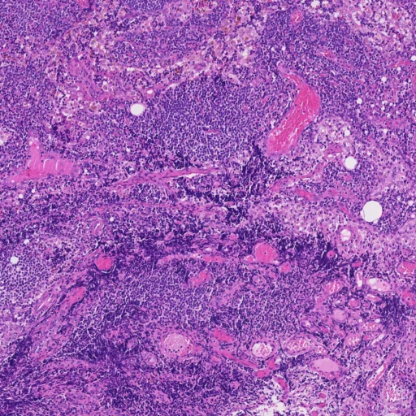

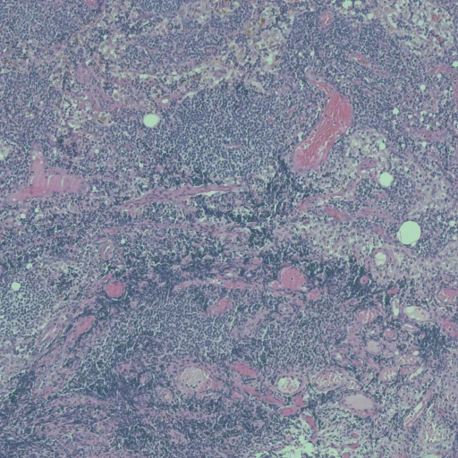


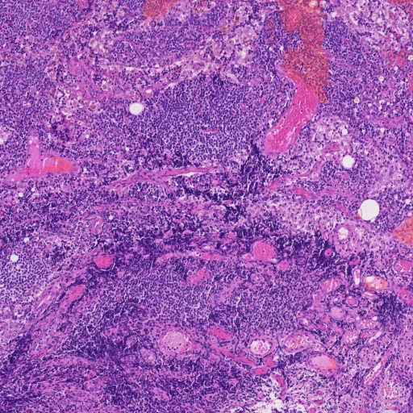
Field 06 · same coordinates in every panel

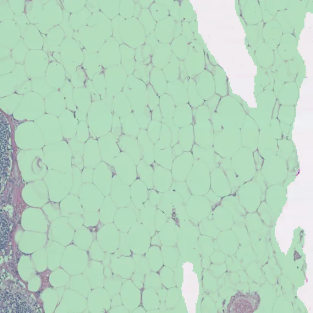
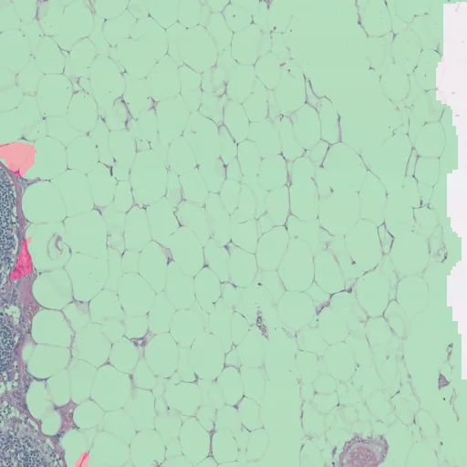


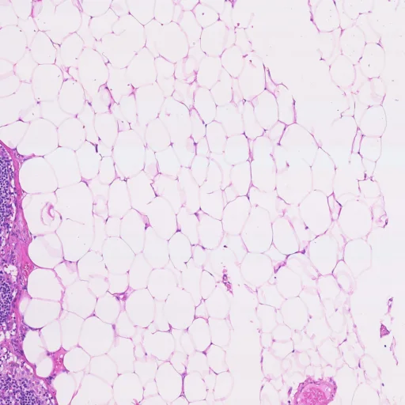
Field 07 · same coordinates in every panel


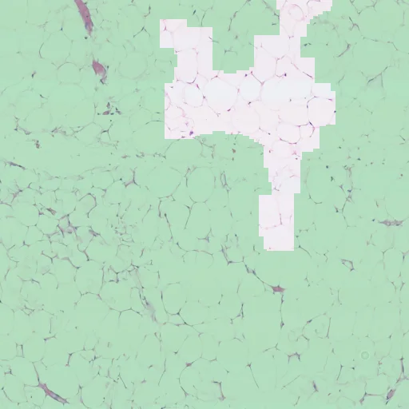


Field 08 · same coordinates in every panel

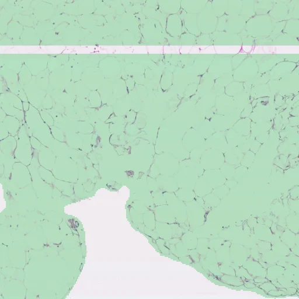


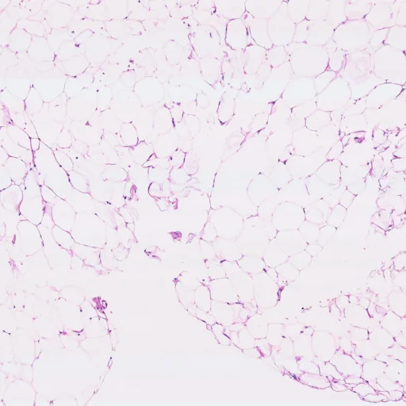
Field 09 · same coordinates in every panel